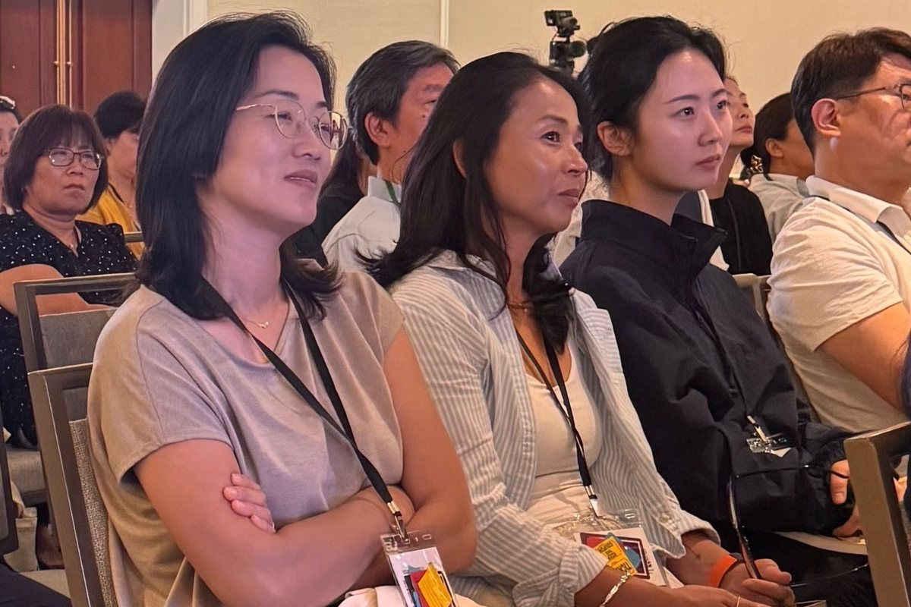
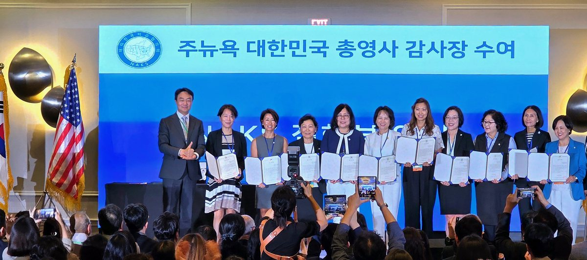
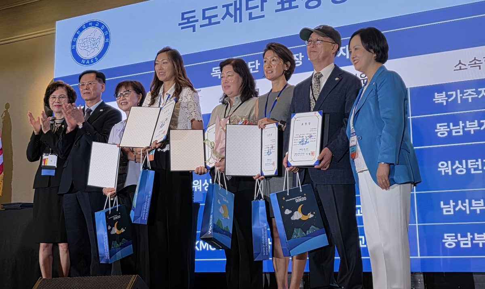

Four of our teachers traveled to New Jersey this summer for the 44th National Association for Korean Schools (NAKS) conference and general assembly. Together with some 580 Korean school educators gathered from across the country, they spent three days learning, sharing, and thinking together about the future of Korean school education.
The conference brought very happy news for our school as well. Lee Ji-na (이지나) received a ten-year long-service teaching commendation, in recognition of her years of dedication to Korean school education. Principal Demi Pysh (문동미) received both a certificate of appreciation from the Consul General of the Republic of Korea in New York and a commendation from the Dokdo Foundation. The Dokdo Foundation has long encouraged and honored the Korean schools and educators who work steadily to teach Korean history and territory accurately, and this award was a meaningful recognition, once again, of the value of the history and culture education our school has carried forward.

The keynote was given by Professor Im Cheol-il of Seoul National University. Professor Im, who has studied AI and the future of education for many years, emphasized that "AI can take its place within a Korean school the way good teaching material does. It is not something that replaces the teacher, but a companion that helps the teacher concentrate more fully on the child in front of her." He also said, "Students must learn to understand AI, to use it, and further, to think together with it. And in that process they must also develop the creativity, the ability to collaborate, and the sound judgment that no machine can supply."
At the opening ceremony, NAKS President Kwon Ye-soon said, "Identity education is our purpose, and AI is a new tool for achieving that purpose." That single remark was the message that best captured the direction of this year's conference. No one believes that AI could teach Korean better than a teacher who remembers not only the children's names but their family stories and how they have grown. Rather, it was a gathering that confirmed a shared hope — that for the mission of a Korean school that has not changed in forty-four years, the teaching of Korean language, history, culture, and identity, we can now draw on richer materials, more varied information, and the help of new technology to give our children a better education.


Most valuable of all is the learning that came home to our school. Our teachers returned with a great many ideas they can apply directly in their lessons: effective teaching methods that help vocabulary stay in the memory, a range of reading materials developed with the language environment of children growing up outside Korea in mind, and digital tools and ways of using AI that will make Saturday classes richer and more engaging.
This learning will not end as one person's experience. At the fall-term teachers' meeting, we plan to share the new teaching methods and educational materials gained at this conference with all of our teachers, and to adapt them to fit our own school's classrooms.
What changes are the tools of education; what does not change is our teachers' heart for the children. Our school will go on learning and making active use of new educational environments, while continuing to be the warm Korean school that protects the Korean language, Korean culture, and our children's identity.